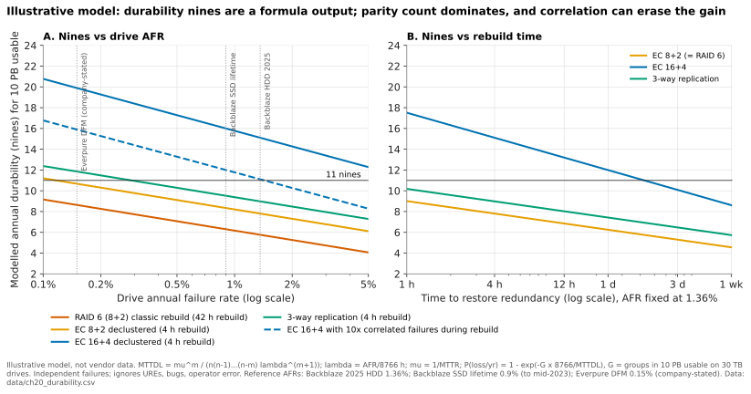

20. Distributed-systems fundamentals for storage¶
Depth: L2 · Reading time: ~8 min · Last verified: 2026-11-01 Prerequisites: Data protection and resilience · Object storage and S3 · Scale-out shared-nothing clusters
TL;DR¶
- With more than one copy, a system must define "the latest write": its consistency model. Primary storage chooses strong consistency and pays in latency.
- Consensus (Paxos, Raft) needs 2f+1 voters to survive f failures. Two-site clusters therefore need a third vote, a witness, against split brain.
- CAP in practice is PACELC. The everyday trade is latency versus consistency, chosen per feature: sync metro picks consistency, async DR picks latency.
- "Eleven nines" of durability is a model output, not a measurement. Parity, rebuild time and assumed independence drive it; correlated failures are what lose data in practice.
- Availability nines are measured; durability nines are modelled. Ask which is quoted.
Why this matters for Everpure strategy¶
Headline claims such as "zero RPO", "six nines", "11 nines durability" and "strongly consistent S3" each rest on a quorum rule, a failure model and a consistency choice. Knowing which separates an engineering guarantee from a marketing number. The stakes are rising: disaggregated and parallel systems (Chapters 16 and 17) spread metadata and erasure codes across hundreds of nodes, where the hard engineering and the outage risk now live.
Core concepts¶
Consistency models: what a reader is promised¶
A consistency model is the contract about what a reader may see when copies disagree.
| Model | Promise to a reader | Cost | Who uses it |
|---|---|---|---|
| Strong / linearizable | Every read sees the latest acknowledged write, as if there were one copy | Each write waits for a quorum or synchronous mirror; minority side stops during a partition | Block arrays (FlashArray, PowerMax, ONTAP); metro clusters; Spanner; DynamoDB strongly consistent reads1 |
| Strong read-after-write (per object) | Once a PUT or DELETE is acknowledged, every later GET or LIST by any client reflects it; no multi-object transactions | Index commit must be a single linearisation point per key | Amazon S3 since Dec 2020, Azure Blob, GCS (Chapter 9) |
| Causal | If write B depends on write A, nobody sees B without A | Track dependencies (version vectors) | Some geo-distributed databases; rare as a storage product guarantee |
| Close-to-open | A file reopened after another client closes it shows that client's writes | Client caches revalidated on open | NFS (Chapter 8) |
| Eventual | All copies converge if writes stop; reads may be stale meanwhile | Cheapest and fastest; conflicts need resolution (last-writer-wins) | Cross-region and asynchronous replication; Dynamo-style stores at low quorum settings2 |
Table 20.1 — Strong consistency is the norm inside one system or one metro; almost everything across regions is eventual.
Semiconductor bridge: MESI versus consensus. MESI already enforces single-writer, multiple-reader per cache line, which is exactly the strong-consistency invariant. But a coherence fabric assumes no lost messages or independent core failures; a storage cluster must survive both. Consensus is coherence that tolerates faults. A directory maps onto a metadata server; an Exclusive line maps onto a lease or NFS delegation.
Consensus at L2: Raft on a whiteboard¶
Paxos (published 1998)3 and Raft (2014)4 solve the same problem: replicas agree on one ordered log, so all apply the same commands in the same order. Ceph's monitors run Paxos and need a strict majority5; DynamoDB replicates each partition with Multi-Paxos1.
sequenceDiagram
participant C as Client
participant A as Node A
participant B as Node B
participant D as Node D
Note over A,D: Term 4. Leader has crashed. Followers wait a random timeout.
A->>A: timeout fires first, become candidate for term 5
A->>B: RequestVote term 5, my log ends at index 6
A->>D: RequestVote term 5, my log ends at index 6
B-->>A: vote granted
Note over A: 2 of 3 votes is a majority, A is leader for term 5
A->>B: heartbeat AppendEntries, empty
A->>D: heartbeat AppendEntries, empty
C->>A: write X to 5
A->>A: append entry 7 to own log
A->>B: AppendEntries entry 7
A->>D: AppendEntries entry 7
B-->>A: stored entry 7
Note over A: Majority holds entry 7, so it is committed
A->>A: apply to state machine
A-->>C: ACK
A->>D: next heartbeat carries commit index 7
D-->>A: stored entry 7, slow but caught upFigure 20.1 — Raft in two phases: a randomised timeout elects one leader per term by majority vote, then a write commits once a majority has logged it, so the slowest replica never sets latency.
A strong whiteboard answer makes three points. Terms are a logical clock: a node seeing a higher term steps down, so a stale leader cannot commit. Voters reject candidates with staler logs, so a new leader holds every committed entry. Commit needs a majority, not all, so three nodes tolerate one failure.
Quorum math: N, W, R¶
Leaderless, Dynamo-style systems use quorums directly2. With N replicas, writes wait for W acknowledgements and reads query R. W + R > N makes every read overlap the latest write (N=3, W=2, R=2 is classic). W > N/2 stops two conflicting writes both succeeding. N=3, W=1, R=1 is fast but only eventually consistent.
Surviving f failures needs 2f+1 voters, so four voters are no better than three5. Without a majority you get split brain: both halves of a partitioned pair accept writes and diverge. Two-site clusters add a witness (or mediator): a data-less third vote, outside both sites' failure domains, that decides which side keeps serving.
CAP and PACELC: what storage actually chooses¶
CAP (Brewer, 2000; proved by Gilbert and Lynch, 20026) says that during a partition a system gives up consistency or availability. Partitions are not optional, so it is not "pick two". Abadi's PACELC7 adds: else, trade latency against consistency.
Storage chooses per feature. Synchronous metro clusters are PC/EC: each write pays an inter-site round trip, and in a partition the side that loses the mediator race stops serving. Asynchronous DR is PA/EL: local acknowledgement, remote copy lags by the RPO. Spanner is formally CP, yet Brewer argued it exceeds five nines because Google's network rarely partitions8.
Durability nines versus availability nines¶
Availability is the fraction of time data can be served; six nines is ~31.5 seconds of downtime a year, measurable from telemetry. Pure Storage (now Everpure) claimed 99.9999% across the FlashArray//m installed base in 2016, including upgrades, and repeats six nines for later FlashArrays9 (company-stated).
Durability is the probability of not losing data in a year. S3 is designed for eleven nines10; Azure states 11, 12 and 16 nines for locally, zone- and geo-redundant storage11. Nobody can observe a 10⁻¹¹ event on one system, so these are model outputs. (At 100 trillion objects it still implies ~1,000 losses a year.)
The standard model is mean time to data loss (MTTDL). A group of n drives tolerating m failures loses data when m+1 failures overlap. With λ = AFR ÷ 8,766 h and μ = 1 ÷ rebuild time, MTTDL ≈ μᵐ ÷ [n(n−1)…(n−m) λᵐ⁺¹].

Figure 20.2 — Illustrative model: extra parity moves durability by many nines, AFR and rebuild time by fewer, and correlated failures can erase the gain.
Data: data/ch20_durability.csv
Worked example (10 PB usable, 30 TB drives, Backblaze's 2025 HDD AFR of 1.36%12). RAID 6 (8+2) with a 42-hour single-spare rebuild models at 5.8 nines. The same code rebuilt declustered in 4 hours reaches 7.8: RAID 6 and 8+2 EC are identical maths, differing only in rebuild speed. Three-way replication reaches 9.0; EC 16+4 reaches 15.1. Device reliability helps less. Backblaze's SSDs ran at 0.9%13; Everpure states 0.15% for DirectFlash Modules14 (NetApp disputes it15). Cutting AFR from 1.36% to 0.15% adds 2.9 nines to RAID 6; moving from 8+2 to 16+4 adds 7.3. Rule of thumb: each tenfold cut in AFR is worth m+1 nines, each tenfold cut in rebuild time m. One caveat on the declustered lines: the model treats each group of k+m drives as independent. In a declustered layout, almost any m+1 failed drives share some stripe, which in this example costs back roughly three nines for 8+2 and five for 16+4. Rebuilding first the few stripes that have lost the most strips recovers much of that, and declustered systems generally do so.
Correlated failures and failure domains¶
The model assumes independence. If each further failure during a rebuild is ten times likelier, because drives share a batch, firmware or power feed, MTTDL falls by 10ᵐ: the dashed line in Figure 20.2 shows 16+4 losing four nines. In 2019 HPE warned that certain SAS SSDs would die at exactly 32,768 power-on hours without a firmware fix16. Drives installed together fail together. Google's 2010 fleet study named planned kernel upgrades a major source of correlated failure17. Random replica placement compounds it; copyset placement cut modelled data-loss probability in a 5,000-node power outage from 99.99% to 0.15%18.
flowchart LR
D["Drive<br/>media wear, firmware batch"] --> N["Node or controller<br/>CPU, DIMM, NIC, software crash"]
N --> E["Enclosure or shelf<br/>backplane, PSU pair"]
E --> R["Rack<br/>top-of-rack switch, PDU"]
R --> P["Power and cooling zone<br/>UPS, chiller"]
P --> S["Site or availability zone<br/>utility, fire, fibre cut"]
S --> G["Region<br/>disaster, regulation"]
D -.-> D2["Protect: parity within group"]
E -.-> E2["Protect: stripe across enclosures"]
S -.-> S2["Protect: sync metro or async DR"]Figure 20.3 — Each level up is rarer but takes out everything beneath it; protection is only as good as the highest domain a stripe or replica set spans.
The design rule is anti-affinity: at most m strips of a stripe in any domain you intend to survive. Ceph's CRUSH map encodes the hierarchy; VAST's DBox-HA caps strips per enclosure (Chapter 16).
Semiconductor bridge: FIT, AFR and chipkill. One FIT is one failure per 10⁹ device-hours, so 1% AFR ≈ 0.01 ÷ 8,766 × 10⁹ ≈ 1,140 FIT: Backblaze's 1.36% is ~1,550 FIT, a 0.15% module ~170. Erasure coding is chipkill one level up: Reed–Solomon across devices survives a dead chip or drive, until "independent" devices share a defect.
Caching and tiering design¶
Storage caches face the CPU's write-back versus write-through choice, with durability added.
| Policy | Acknowledge when | Risk | Typical use |
|---|---|---|---|
| Write-through | Slower tier has persisted | Latency of the slow tier | Simple caches, client-side read caches |
| Write-back, volatile | Data is in DRAM cache | Loss on power or node failure | Unsafe for primary storage |
| Write-back, persistent and mirrored | Two NVRAM/SCM copies exist | Mirror link and NVRAM capacity | Dual-controller arrays (Chapter 14); DASE SCM (Chapter 16) |
| Tiering (move, not copy) | Data placed by temperature | Fast tier may hold the only copy | Hot/cold flash and HDD/cloud tiers |
Table 20.2 — Write-back is safe only when the cache is itself a durable, mirrored copy; a tier holding the only copy needs the same parity as any other.
Read caches add a coherence cost: every client or node cache needs invalidation, leases or timeouts, which is why NFS settles for close-to-open.
How Everpure approaches it vs. competitors¶
| System | Agreement mechanism | Partition / PACELC behaviour | Durability or availability claim |
|---|---|---|---|
| Everpure ActiveCluster (FlashArray) | Synchronous mirror, Pure1 Cloud Mediator or on-premises mediator; pre-election if mediator lost | PC/EC: up to 11 ms RTT between arrays; loser of mediator race stops serving the pod19 | Six nines availability, installed base (company-stated)9 |
| NetApp SnapMirror active sync / MetroCluster | ONTAP Mediator; ONTAP Cloud Mediator for SnapMirror active sync from ONTAP 9.17.120 | PC/EC; automatic unplanned failover via mediator21 | See Chapter 6 |
| Ceph | Paxos monitors hold cluster map; CRUSH places data by failure domain | PC/EC inside a cluster; multisite asynchronous | Depends on pool rule and EC profile5 |
| Amazon S3 / DynamoDB | Replicated metadata; DynamoDB Multi-Paxos per partition | Strong within region; cross-region asynchronous | S3: designed for 11 nines101 |
| Dynamo-style (Cassandra) | Leaderless quorums, tunable N/W/R | PA/EL by default; PC with QUORUM settings | Operator-defined |
Table 20.3 — Nearly everyone converges on strong consistency inside a site and a witness for two-site clusters; claims differ in whether they are measured (availability) or modelled (durability).
Everpure's distinctive choice was a cloud-hosted witness, removing the need for a third site19. Steelman for rivals: NetApp has shipped a cloud mediator since ONTAP 9.17.120, and Dell's SRDF family has three decades of deployments. An option a strategy team might evaluate, based on public information: publishing durability assumptions beside availability telemetry, making a modelled number defensible.
History and trajectory¶
timeline
title Distributed-systems ideas in storage
1998 : Paxos paper published after an eight-year delay
2000 : Brewer states the CAP conjecture
2002 : Gilbert and Lynch prove CAP
2007 : Amazon Dynamo popularises N W R quorums
2010 : Google quantifies correlated failures in its fleet
2012 : PACELC and Spanner
2013 : Copysets placement
2014 : Raft published
2017 : ActiveCluster with cloud mediator
2020 : Amazon S3 becomes strongly consistentFigure 20.4 — Theory came first; products adopted strong consistency and cloud witnesses once networks made the latency affordable.
Direction: strong consistency wherever latency allows, wider codes with declustered rebuilds, cloud witnesses. AI scale puts metadata consensus and lease managers on the critical path (Chapter 21).
Numbers that matter¶
| Metric | Value | Context | Source / date |
|---|---|---|---|
| HDD fleet AFR, 2025 | 1.36% | 344,196 drives; 1.55% in 2024 | Backblaze, 2026-02-1212 |
| SSD lifetime AFR | 0.9% | Backblaze boot SSDs to mid-2023 | The Register, 2023-09-2613 |
| DirectFlash Module AFR | 0.15% | Company-stated; disputed by NetApp | Everpure blog1415 |
| ActiveCluster max RTT | 11 ms | Synchronous, mediator-arbitrated | Everpure docs19 |
| S3 / Azure LRS / ZRS / GRS durability | 11 / 11 / 12 / 16 nines | Design targets, not SLAs | AWS10, Microsoft11 |
| FlashArray availability | 99.9999% (~31.5 s/yr) | Company-stated, measured on installed base | Pure Storage, 20169 |
| AFR to FIT | 1% ≈ 1,140 FIT | 0.01 ÷ 8,766 h × 10⁹ | Worked example |
| RAID 6 vs 16+4 nines | ~5.8 vs ~15.1 | 10 PB, 1.36% AFR, 42 h vs 4 h rebuild | Worked example (Figure 20.2) |
Conversation playbook¶
Questions for a PM
- "What is in the denominator of our six nines?" Strong: installed-base telemetry, the outage definition, whether upgrades count, the window.
- "What do we tell a customer who asks for our durability number?" Strong: a model with stated parity and rebuild times, plus the caveat that bugs and humans dominate real loss, hence SafeMode snapshots.
- "Where does the mediator run for a customer with no internet egress?" Strong: an on-premises mediator VM in a third failure domain; pre-election if it is lost.
Questions for an engineer
- "Which FlashBlade or EXA components run consensus, with how many voters?" Strong: names the service, quorum size and what stalls without a majority.
- "How long does rebuilding our largest DirectFlash Module take at 80% full under load?" Strong: hours, throttle policy, declustered or not.
- "How do we prevent correlated failures?" Strong: telemetry-staged firmware rollout, batch mixing, anti-affinity.
Don't say this:
- "CAP means pick two." Partitions are not optional.
- "Eleven nines means we never lose data." It models independent drive failures, not bugs or people.
- "A two-node cluster can vote." It needs a witness.
- "RAID 6 and 8+2 erasure coding differ in durability." Same code; rebuild speed and placement differ.
- "Eventual consistency is a bug." It is a deliberate latency trade.
Going deeper (optional, L3 pointers)¶
- Raft paper4 and Lamport's "Paxos Made Simple".
- Ford et al.17 and Cidon et al.18 on correlated failures and placement; Abadi7 and Brewer8 on CAP.
- Greenan, Plank and Wylie (HotStorage 2010) on MTTDL's limits.
Key terms¶
- Raft / Paxos — majority-based consensus on one ordered log.
- Quorum (N/W/R) — W + R > N makes reads see the latest write.
- Linearizability — behaves as if there were one copy.
- PACELC — partition: availability or consistency; else: latency or consistency.
- Witness / mediator — data-less third vote against split brain.
- MTTDL — modelled mean time to data loss.
- FIT — failures per 10⁹ device-hours.
- Copyset — node group holding all replicas of some chunks.
- See the glossary.
Sources¶
-
M. Elhemali et al., "Amazon DynamoDB: A Scalable, Predictably Performant, and Fully Managed NoSQL Database Service," USENIX ATC 2022, 2022-07. https://www.usenix.org/conference/atc22/presentation/elhemali (retrieved via search 2026-11-01). ↩↩↩
-
G. DeCandia et al., "Dynamo: Amazon's Highly Available Key-value Store," ACM SOSP 2007, 2007-10. https://www.allthingsdistributed.com/files/amazon-dynamo-sosp2007.pdf (retrieved 2026-11-01). ↩↩
-
L. Lamport, "The Part-Time Parliament," ACM Transactions on Computer Systems 16(2), 1998-05. https://www.microsoft.com/en-us/research/publication/part-time-parliament/ (retrieved 2026-11-01). ↩
-
D. Ongaro and J. Ousterhout, "In Search of an Understandable Consensus Algorithm," USENIX ATC 2014, 2014-06. https://www.usenix.org/conference/atc14/technical-sessions/presentation/ongaro (retrieved 2026-11-01). ↩↩
-
Ceph documentation (Reef), "Adding/Removing Monitors," n.d. https://docs.ceph.com/en/reef/rados/operations/add-or-rm-mons (retrieved via search 2026-11-01). ↩↩↩
-
S. Gilbert and N. Lynch, "Brewer's Conjecture and the Feasibility of Consistent, Available, Partition-Tolerant Web Services," ACM SIGACT News 33(2), 2002. https://dl.acm.org/doi/10.1145/564585.564601 (retrieved via search 2026-11-01). ↩
-
D. Abadi, "Consistency Tradeoffs in Modern Distributed Database System Design: CAP is Only Part of the Story," IEEE Computer, 2012-02. https://cs.umd.edu/~abadi/papers/abadi-pacelc.pdf (retrieved via search 2026-11-01). ↩↩
-
E. Brewer, "Spanner, TrueTime and the CAP Theorem," Google, 2017-02. https://research.google/pubs/pub45855/ (retrieved via search 2026-11-01). ↩↩
-
Pure Storage, "Pure Storage Introduces Petabyte-Scale Flash Storage for Cloud IT" (press release, FlashArray//m 99.9999% availability), 2016-10. https://www.everpuredata.com/company/news-and-events/press/ps_introduce_petabyte_scale_flash_storage_for_cloud.html (retrieved via search 2026-11-01). ↩↩↩
-
Amazon Web Services, "Data protection in Amazon S3" (S3 User Guide), n.d. https://docs.aws.amazon.com/AmazonS3/latest/userguide/DataDurability.html (retrieved via search 2026-11-01). ↩↩↩
-
Microsoft, "Azure Storage redundancy," n.d. https://learn.microsoft.com/en-us/azure/storage/common/storage-redundancy (retrieved via search 2026-11-01). ↩↩
-
Backblaze, "Backblaze Drive Stats for 2025," 2026-02-12. https://www.backblaze.com/blog/backblaze-drive-stats-for-2025/ ; corroborated by StorageReview, "Backblaze 2025 year-end drive stats: annual AFR falls to 1.36%," 2026-02. https://www.storagereview.com/news/backblaze-2025-year-end-drive-stats-annual-afr-falls-to-1-36-as-high-capacity-drives-dominate-fleet (retrieved via search 2026-11-01). ↩↩
-
The Register, "Backblaze SSD failure report," 2023-09-26. https://www.theregister.com/2023/09/26/ssd_failure_report_backblaze (retrieved via search 2026-11-01). ↩↩
-
Pure Storage blog, DirectFlash Module reliability post (DFM AFR 0.15% vs 0.90% for COTS SSDs), n.d. https://blog.purestorage.com/?p=143164 (retrieved via search 2026-11-01). ↩↩
-
NetApp, "Direct flash vs SSDs," n.d. https://www.netapp.com/blog/direct-flash-vs-ssds/ (retrieved via search 2026-11-01). ↩↩
-
Blocks & Files, "HPE issues firmware fix to stop SSD failure," 2019-11-25. https://www.blocksandfiles.com/flash/2019/11/25/hpe-issues-firmware-fix-to-to-stop-ssd-failure/1607574 (retrieved via search 2026-11-01). ↩
-
D. Ford et al., "Availability in Globally Distributed Storage Systems," USENIX OSDI 2010, 2010-10. https://www.usenix.org/conference/osdi10/availability-globally-distributed-storage-systems (retrieved via search 2026-11-01). ↩↩
-
A. Cidon et al., "Copysets: Reducing the Frequency of Data Loss in Cloud Storage," USENIX ATC 2013, 2013-06. https://www.usenix.org/conference/atc13/technical-sessions/presentation/cidon (retrieved via search 2026-11-01). ↩↩
-
Everpure Support, "ActiveCluster Introduction," n.d. https://support.everpuredata.com/r/activecluster/activecluster-introduction (retrieved via search 2026-11-01). ↩↩↩
-
NetApp, "What's new in ONTAP 9.17.1" (ONTAP release notes), n.d. https://docs.netapp.com/us-en/ontap/release-notes/whats-new-9171.html (retrieved 2026-11-01; seen via search summary). ↩↩
-
NetApp, "SnapMirror active sync overview" (ONTAP documentation), n.d. https://docs.netapp.com/us-en/ontap/snapmirror-active-sync/ (retrieved via search 2026-11-01). ↩